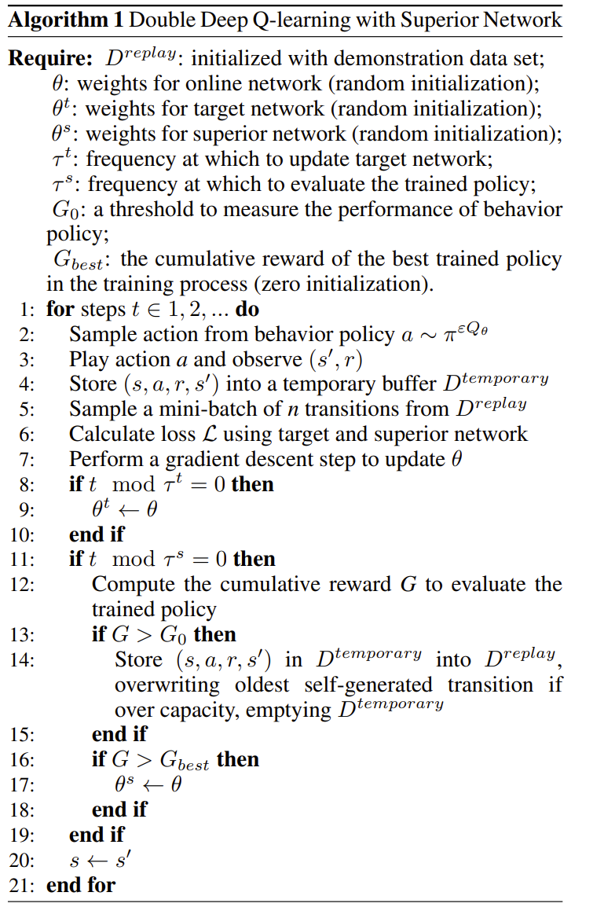
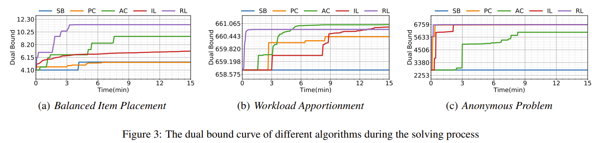

Reinforcement Learning for Variable Selection in a Branch and Bound Algorithm (22)
对原始的RL方法做了一些trick方面的优化，但与上一个有很大的不同
传统方法
- strong-branch 略
- persudo-cost ：
比如说当我们在有一些历史分支变量选择(min)时的记录，我们选择了在LP当中取值为\(x_i\)的变量,其分别可以取整为 \(\lceil x_i \rceil\)，\(\lfloor x_i \rfloor\),相较于LP值，其带来的目标函数变化量为： $$ PC_i^{+}=\frac{z_{0}-z_{up}}{ \lceil x \rceil -x_i} \quad PC_i^{-}=\frac{z_{0}-z_{up}}{ \lfloor x \rfloor -x_i} $$
于是我选择预期目标变化量最大的变量进行分支：
由于不需要实际执行分支，所以成本会低很多，但是需要前期的好经验支持。
改进的强化学习
RL设计（仍然传统）
- 状态 ：将节点按照 Gasse 等人提出的二分图来表示。
-
动作：即从\(a \in A\)中选择一个动作，a与变量x是一一对应的。
-
状态转移，$ p(s_{t+1}| s_t,a_t)\(由节点选择策略\)\pi$确定。
-
奖励：自上一个状态以来的对偶积分 $$ F(\tau)=\tau c^\tau x -\int_{t=0}^{\tau} z_t^* dt \ r(a_i|s_t)=F(t+1)-F(t) $$

-
下一个状态：下一个B&B节点的二分图表示
-
终止标志当前episode 是否结束。
总之我们RL设计这一块并未看到它有什么非常创新的地方，总结一下就是传统的RL方法+ecole的状态表示方式。
训练框架（有所创新）

本框架有两个创新之处，其一在于引入了优势网络的设计，如下所示： $$ \mathcal{L}(\theta) = \mathbb{E}\left[ \left( r + \gamma \max_{a'} Q^t(s', a'; \theta^t) - Q(s, a; \theta) \right)^2 \right] + \mathbb{E}\left[ \left( Q^s(s, a; \theta^s) - Q(s, a; \theta) \right)^2 \right] $$
于是现在一共就有了所谓的三个网络： 1. oline network:用于动作选择。 2. target network :用于动作价值评估。 3. superior network ：用于向高性能策略对齐。
其中前两个网络就是传统的时序差分，而最后一个网络是以结果为导向，是在检验当前策略的实际效果后，如果下过更好，那么就向当前策略对齐。
另一个创新之处是对经验回放缓存（实际就是常规cahce）做了一点处理： * 首先收集一些非常优秀的训练数据加入到cache中（我个人呢推测可能是最优解或者SB） * 若某段轨迹带来的回报超过一个阈值我就把其中的数据(1.e.四元组)加到cache中，用于以后学习。 * 数据依照lru更新，但是优秀预训练数据不会被移除。
效果
这种启发是的东西往往缺乏数学证明，只能看执行效果，作者认为是比较优秀的：
